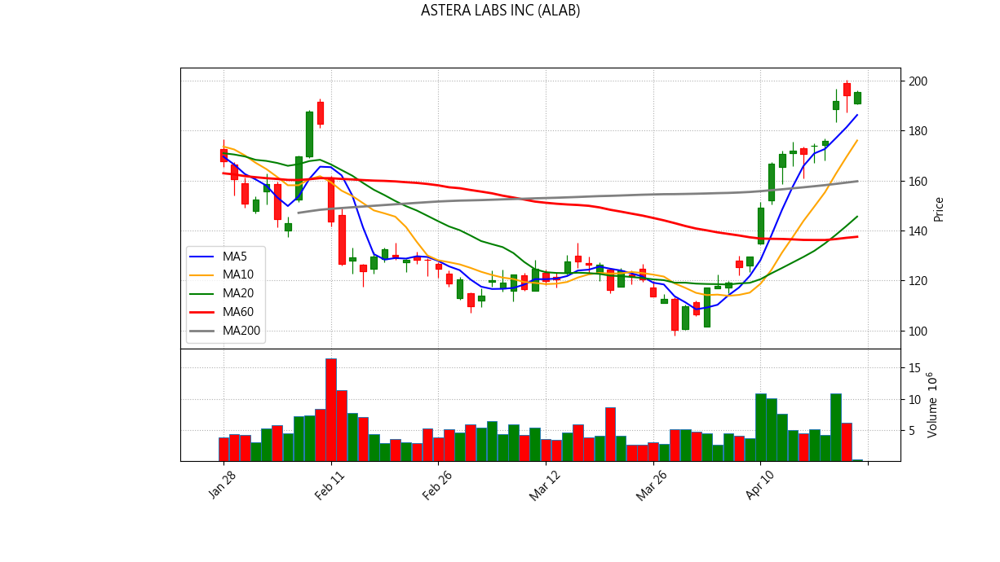
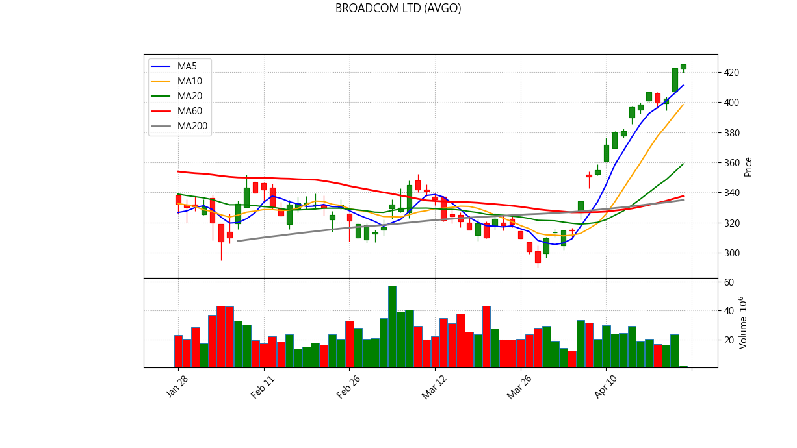
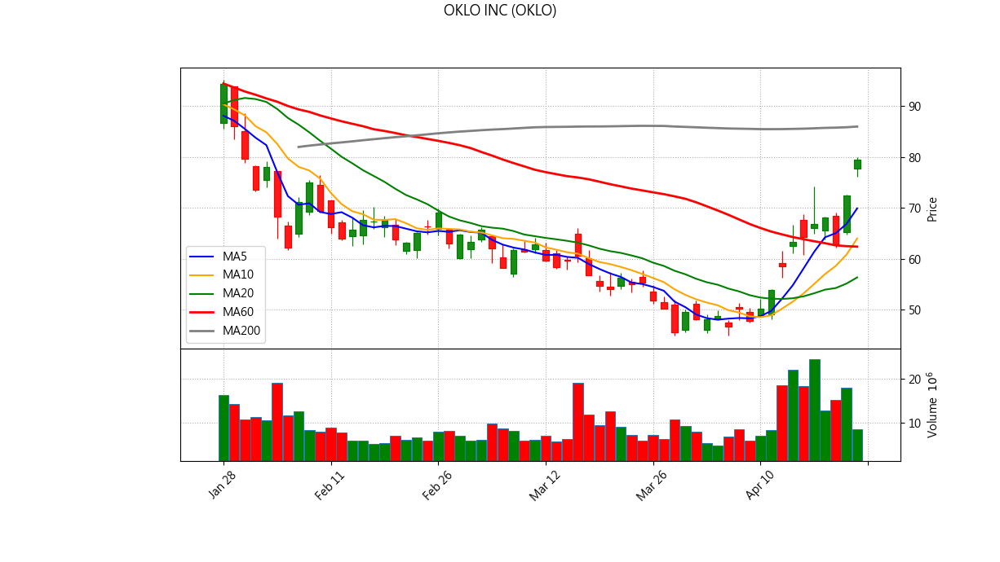
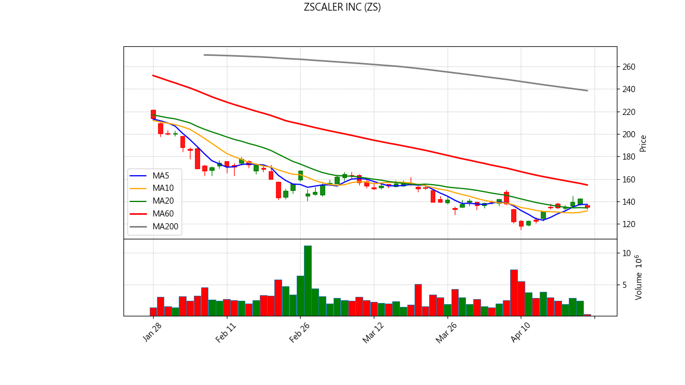

📊 NYSE/US Stock Inventory AI Diagnosis
Generated at: 2026-04-23 22:46:41
ASTERA LABS INC (ALAB)
Current Price: $195.57
💼 Portfolio Status
Avg Cost: $166.64
Quantity: 25
Unrealized P/L: $723.28
Return Rate: 17.36%
📋 Analysis Signals
✅ No major sell signals triggered.

✨ AI Comprehensive Diagnosis
ADVANCED MICRO DEVICES (AMD)
Current Price: $303.61
💼 Portfolio Status
Avg Cost: $220.47
Quantity: 10
Unrealized P/L: $831.41
Return Rate: 37.71%
📋 Analysis Signals
✅ No major sell signals triggered.

BROADCOM LTD (AVGO)
Current Price: $425.22
💼 Portfolio Status
Avg Cost: $340.89
Quantity: 5
Unrealized P/L: $421.66
Return Rate: 24.74%
📋 Analysis Signals
✅ No major sell signals triggered.

✨ AI Comprehensive Diagnosis
ALPHABET INC-CL C (GOOG)
Current Price: $337.95
💼 Portfolio Status
Avg Cost: $321.69
Quantity: 11
Unrealized P/L: $178.86
Return Rate: 5.05%
📋 Analysis Signals
✅ No major sell signals triggered.

✨ AI Comprehensive Diagnosis
MARVELL TECHNOLOGY INC (MRVL)
Current Price: $163.20
💼 Portfolio Status
Avg Cost: $95.90
Quantity: 27
Unrealized P/L: $1,816.98
Return Rate: 70.17%
📋 Analysis Signals
✅ No major sell signals triggered.

✨ AI Comprehensive Diagnosis
MICRON TECHNOLOGY INC (MU)
Current Price: $478.35
💼 Portfolio Status
Avg Cost: $393.53
Quantity: 9
Unrealized P/L: $763.38
Return Rate: 21.55%
📋 Analysis Signals
✅ No major sell signals triggered.

✨ AI Comprehensive Diagnosis
NVIDIA CORP (NVDA)
Current Price: $202.88
💼 Portfolio Status
Avg Cost: $167.67
Quantity: 30
Unrealized P/L: $1,056.23
Return Rate: 21.00%
📋 Analysis Signals
✅ No major sell signals triggered.

✨ AI Comprehensive Diagnosis
OKLO INC (OKLO)
Current Price: $79.56
💼 Portfolio Status
Avg Cost: $81.48
Quantity: 47
Unrealized P/L: $-90.20
Return Rate: -2.36%
📋 Analysis Signals
✅ No major sell signals triggered.

ZSCALER INC (ZS)
Current Price: $134.98
💼 Portfolio Status
Avg Cost: $211.08
Quantity: 8
Unrealized P/L: $-608.82
Return Rate: -36.05%
📋 Analysis Signals
⚠️ 【Break below 5MA】Short-term weakness.
💀 【Death Cross/MA60 Down】Strong sell signal!
